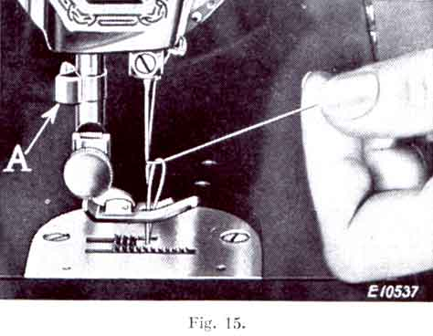

THE NEEDLEBAR
Online Manuals Section
(See Fig. 13)
Turn the balance wheel over towards you until the needle-bar is at its highest position, and loosen the thumb-screw (A) in the needle clamp.
Insert the needle into the needle clamp, to the left of the thread guide, as far as it will go, with the flat side of its shank to the left, as shown in the illustration. Then tighten the thumb-screw.
-
(See Fig. 14)
Turn the balance wheel over towards you until the thread take-up lever (6) is raised to its highest point. Place a reel of thread on the spool pin at the top of the machine, and lead the thread into the thread guide (1), down, under and from right to left between the tension discs (2).
Hold the reel tightly with the right hand and with the left hand pull the thread up under the take-up spring (4) until it enters the retaining fork (3).
Then pass the thread up and back of the thread guide (5) and from right to left through the hole in the take-up lever (6), down into the guide (8), into the guide (9), and from right to left through the eye of the needle (10), leaving about three inches of thread with which to commence sewing.
To obtain best results it is absolutely necessary that the needle should be of the size stated for the number of cotton, linen or silk, as shown on inside of back cover. If rough or uneven thread is used, or if it passes with difficulty through the eye of the needle, the machine will not function satisfactorily.
The Singer Needle Threader saves time, trouble and patience and is invaluable to those having defective sight.
With the left hand hold the end of the needle thread, leaving it slack from the hand to the needle.

Turn the balance wheel over towards you for the needle to move down and up again to its highest. Pull the thread you are holding, and the under thread will be brought up with it through the hole in the throat plate, as shown in Fig. 15. Place both ends of thread under and to the back of the presser foot.
Place the material to be sewn beneath the presser foot, lower the latter, and commence to sew.
When sewing thick material, it may be necessary to turn the balance wheel over towards you by hand to start the machine. This should also be done if the machine stops when sewing across thick seams.
NOTE -- Do not try to help the feeding of the work by pulling the material, as this may deflect the needle and cause it to break.
Stop the machine with the thread take-up lever (6, Fig. 14) at its highest point and raise the presser foot. Draw the material back and to the left and sever the threads by passing them over the thread cutter (A, Fig 15). Leave the ends of the threads a few inches long under and at the back of the presser foot.
(See Fig 16)
For ordinary stitching, the tension on the upper and under threads should be equal, so as to lock both threads in the centre of the work, as above.
If either tension is stronger than the other, imperfect stitching will be the result, thus:--
Fine fabrics require a light tension, while heavy materials want more tension to obtain a perfect stitch.
The tension on the needle thread can be regulated only when the presser foot is down.
A correct stitch can usually be obtained by varying the tension on the needle thread.
Lower the presser foot and then turn the thumb nut (B) for more or less tension. The tension index flange (D) is marked with numbers 0 to 9 indicating the different degrees of tension that can be produced. The numbers do not denote a particular size of thread.
By noting the particular number opposite the indicator line, when set for a satisfactory tension on work being stitched, this number can be readily reverted to when changing from one class of material to another. The higher numbers denote increased tension, and the lower numbers less tension. The tension indicator (G) is marked with the signs + and - which indicate the direction to turn the thumb nut (B) for more or less tension.
As all machines are correctly adjusted before leaving the factory, the under tension seldom requires to be altered, but if this becomes necessary tighten the screw (A, Fig 10) which is nearest the centre of the tension spring on the outside of the bobbin case for more tension, or loosen the screw slightly for less.
Always use thread with corresponding size of needle as per Table on page 3 of cover.
(See Fig 17)
Screw the thumb nut (B) away from the stitch indicator plate (A) as far as it will go, then move the stitch regulator lever (C) until it is in line with the figure denoting the number of stitches desired per inch, and screw the thumb nut (B) inward until it touches the stitch indicator plate.
Thus set, the machine will make the indicated number of stitches in a forward direction. If it is desired to reverse the direction of the stitching, raise lever (C) as far as possible and the machine will make the same number of stitches in a backward direction.
Loosen the tension on the needle thread and set the stitch regulator to make the longest stitch -- No. 6. The stitches may then be easily pulled from the material.
Machine basting is firmer, more even, and much more quickly done than by hand.
For ordinary family sewing it is seldom necessary to change the pressure on the material. If sewing fine silk or flimsy material, lighten the pressure by giving the thumb screw (C, Fig 19) two or three turns upwards. To increase the pressure, give the thumb screw a few turns downwards.
Stop the machine when the needle is rising, but still in the material. Raise the presser foot and turn the work, using the needle as a pivot. Then lower the presser foot.
Use a short stitch and as light a tension as possible on the needle thread, so that the stitching will be loose enough to allow the material to stretch.
To ensure easy running the machine requires to be oiled so that all moving parts in contact are covered with a film of oil. These should never be allowed to become dry.
If used constantly, the machine should be oiled daily, while with moderate use, an occasional oiling is sufficient. A drop of oil should be applied at each of the points indicated by the unlettered arrows in Figs. 18, 19, and 20. Oil holes are provided in the machine for bearings which cannot be directly reached. When oiling insert the oil can spout well into the oil holes.
Turn back the cover at the top of the machine and oil the moving parts inside the arm as indicated in Fig. 18, and occasionally apply a small quantity of Singer Motor Lubricant to the teeth of the gear (A), then replace the cover.
Take out the thumb screw (B, Fig 18) and remove the face plate. Put one drop of oil into each of the holes and joints indicated in Fig. 19, then replace the face plate and thumb screw.
Occasionally apply a drop of oil at the hook bearing at B in Fig. 12.
To reach the parts underneath the bed turn the machine over on its side. Remove the thumb nut and felt washer from the screw (E, Fig 20) and take off the cover plate. Apply oil at the holes and bearings indicated in Fig. 20, and occasionally apply a small quantity of Singer Motor Lubricant to the teeth of the gears (D). Replace the bed cover plate, washer and thumb nut, being careful not to fasten the latter too tightly.
USE ONLY SINGER LUBRICANT FOR LUBRICATING THE MOTOR. A tube of this lubricant is sent with the machine.
Singer Electric Motor Lubricant is a specially prepared non-flowing compound which is not affected by varying temperatures. It is the only lubricant which will positively lubricate the motor. Other lubricants, including oil or ordinary grease, must not be used for lubricating the motor as they are harmful for this purpose.
When the machine is despatched from the factory the two motor grease cups (A, Fig. 21) are filled with sufficient lubricant for approximately six months use, under ordinary circumstances.
At least once every six months thereafter, these grease tubes should be refilled with Singer Electric Motor Lubricant. To do this, insert the tip of the lubricant tube tube into the hole of each of the grease tubes and force the lubricant through until both grease tubes are filled.
The Belt. The belt tension should be only enough to keep the belt from slipping. If the tension is incorrect, loosen the screw (C, Fig. 8) about one turn to allow the motor to drop downward. Now retighten the screw and the belt will be found to have the correct tension.
Machine working heavily. If the machine runs hard after being idel, oil with paraffin (US = kerosene. AQ). Then run rapidly, wipe clean and oil with Singer Oil.
Needles Breaking. See that the needle is not bent, the upper tension is not too tight, and the presser foot or attachments are securely fastened. Avoid pulling the material and do not sew heavy seam or thick goods with too fine a needle (see table on inside of back cover).
Breaking of Needle Thread. This may be caused by:
Improper threading.
Tension being too tight.
Thread being too coarse for size of needle.
Needle being bent, having a blunt point, or being set incorrectly.
Inferior needles and thread are often the causes of breaking. The eye in Singer Needles is specially finished to prevent cutting of thread, while the best thread resists strain and is free from knots. Singer Shops sell the best machine sewing thread.
Breaking of Bobbing Thread. This may be caused by:--
Improper threading of bobbin case.
Tension being too tight.
Skipping of Stitches. The needle may not be accurately set into the needle bar. It may be blunt or bent, or too small for the thread in use.